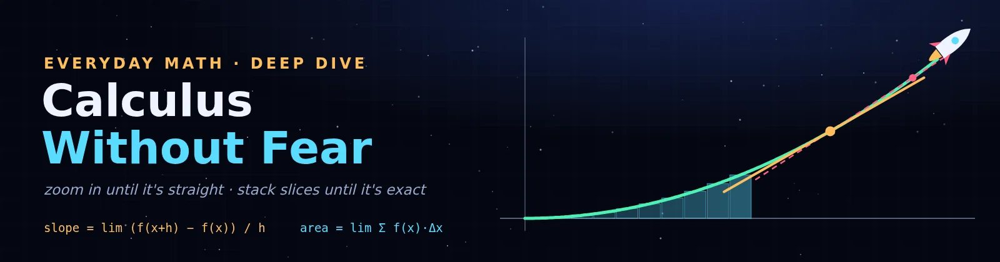

"Zoom in until it's straight. Stack slices until it's exact."
Calculus is two ideas wearing a lot of notation. The derivative asks how steep is it right here? — and answers by zooming in until the curve looks like a line. The integral asks how much has piled up? — and answers by adding thin slices. The fundamental theorem says those two questions undo each other. Five benches let you do each idea with your hands, and the sixth points out where it already shows up in your day. Built at Steven Powell's direction as the next step after the Algebra, Geometry and Trigonometry Deep Dives — no fear required, just a slider.
The red secant joins two points on the
curve, a gap h apart. Its slope is the difference quotient
(f(a+h) − f(a)) / h — rise over run, nothing more. As h shrinks the secant
swings onto the gold tangent, whose slope is the
derivative f′(a). Drag on the picture to move the point.
Top: the curve and its tangent at x. Bottom: the slope graph. Every place you visit drops a gold dot at height = slope. Drag across and a whole new curve appears — the derivative. Try x²: the dots line up into a straight line through the origin, twice as steep.
Each slice is a rectangle Δx wide, as tall as the curve at its left edge, right edge, or middle. Add them up and you have an estimate of the area. Push n up and the estimate closes in on the exact answer — that limit is the integral, written ∫ f(x) dx. The long S is an old-fashioned “sum”.
Top: the area under f from 0 to x, shaded (area below the axis counts as negative). Bottom: that area, recorded as a new function A(x). Nudge x a tiny bit and the area grows by a sliver about f(x) tall and dx wide — so the slope of A is f(x). That one sentence is the fundamental theorem of calculus, and it is why slopes and areas are the same subject.
The model: straight up, constant thrust F, propellant burned at a steady
rate ṁ = F / (Isp·g₀), no air drag, gravity held at g₀ = 9.80665 m/s².
Acceleration is a(t) = F / m(t) − g₀ with m(t) = m₀ − ṁt. The
page stacks slices of a to get velocity, and slices of v to get altitude, then compares
with the closed forms calculus gives. The full engine story — nozzles, real Isp values,
staging — lives next door in Rocketry
& Thrust.
| Claim | Measured | Tolerance | Result |
|---|
These rows are runProofs() output, computed from the same
functions the benches draw with — not typed in. If a number on this page and a number in
this table ever disagree, the table is the one to believe, and the disagreement is a bug.